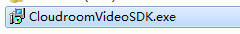
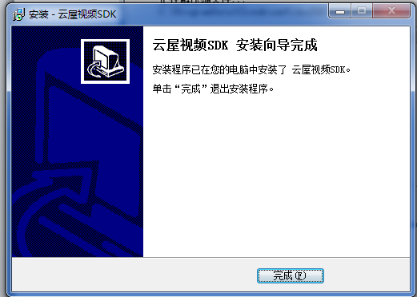
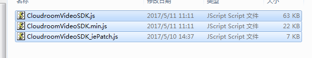
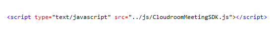
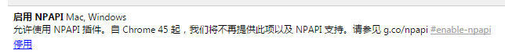
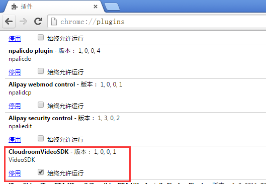
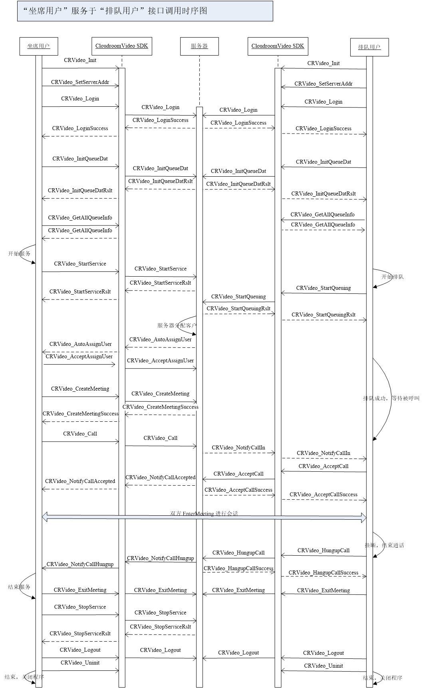
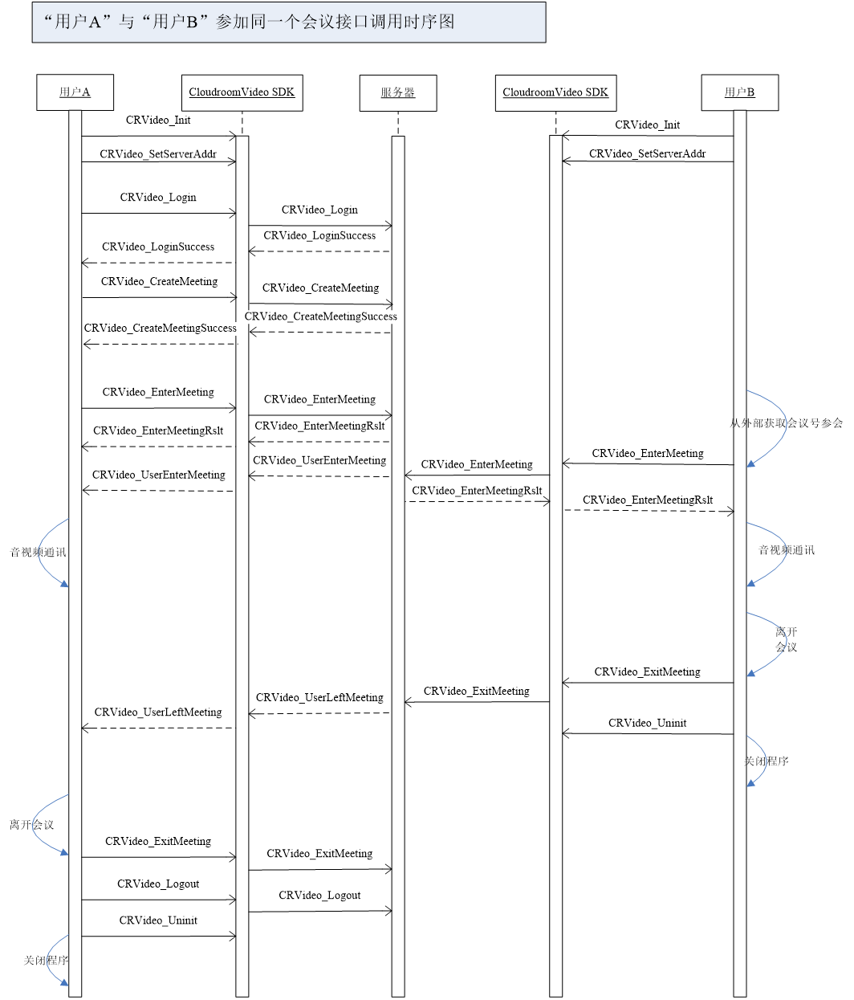
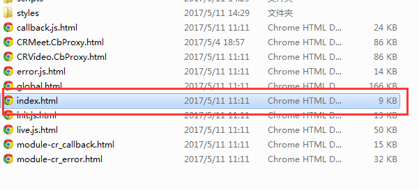

云屋视频会议SDK参考
点击下载SDK 此版本适合v3.0系列SDK
说明
会议SDK结构、SDK开发流程、SDK浏览器开发环境。CloudroomVideo SDK for Web支持的浏览器有：IE8，IE9，IE10，IE11，chrome44及以下（包含chrome44）。
文件夹说明
doc（文档说明文件夹）
- fonts
- scripts
- styles
- callback.js.html
- CloudroomVideoSDK for Web开发指南.docx（web端开发指南）
- CRMeet.CbProxy.html
- CRVideo.CbProxy.html
- CRVideo.Container.html
- CRVideo.MediaContainer.html
- CRVideo.ScreenShareContainer.html
- CRVideo.VideoContainer.html
- error.js.html
- global.html
- index.html（入口文件）
- init.js.html
- live.js.html
- module-cr_callback.html
- module-cr_error.html
examples（四个demo案例文件夹）
- Meeting(web)（会议demo）
- RecordDemo(web)（本地双录demo）
- RemoteRecordDemo(web)（远程双录demo）
- VideoCall(web)（视频会议demo）
js
- CloudroomVideoSDK.js（js sdk文件）
- CloudroomVideoSDK.min.js（js sdk压缩文件）
- CloudroomVideoSDK_iePatch.js（ie8专用js sdk文件）
CloudroomVideoSDK.exe（客户端插件）
history.txt（历史版本文件）
readme.txt（readme文件）
开发准备
JavaScript 的开发工具有很多，开发者可根据自己的喜好进行选择。在此，我们推荐开发者使用Visual Studio Code 作为自己的开发工具，本套开发指南也是针对Visual Studio Code开发环境下进行编写的。
安装插件
- 首先要安装开发插件，CloudroomVideo SDK for Web 提供的所有 JavaScript 接口都是基于这个插件实现，进行web开发之前需要确保插件已经安装成功，双击SDK目录下的开发环境下进行编写的。

选择安装

插件会自动开始安装

完成安装

导入SDK文件
将SDK包js子目录下的CloudroomVideoSDK.js和CloudroomVideoSDK_iePatch.js文件拷贝到自己的web开发环境当中

引用CloudroomVideoSDK.js

如果是IE开发，还需要引用补丁文件

浏览器版本的支持说明
Cloudroom SDK支持chrome 44及以下版本（chrome45版本后不再支持npapi插件），chrome 42以上版本缺省不支持插件，需要手工打开，打开方式如下：
一：在chrome浏览器输入“chrome://flags”

二：启用

三：在chrome浏览器输入“chrome://plugins”
四：找到“CloudroomVideoSDK”，“启用”并勾选“始终允许运行”

五：重启浏览器
基本流程
流程1：（不登录，只参加会议）SDK初始化 -> 设置服务器地址->（参会）-> 反初始化
流程2：（登录后拥有身份，可进行“排队、呼叫、创建会议、参会”等业务）SDK初始化 -> 设置服务器地址-> 登录 ->（排队、呼叫、创建会议、参会）-> 注消 -> 反初始化
SDK初始化
/**
* SDK初始化
* @access public
* @param {string} oemID -开发商ID,没有特别要求可填"CLOUDROOM"
* @param {string} sdkUsePath - sdk配置、临时文件存放位置，可为空
* @param {number} statCallSer - 是否启用callSer模块 0为不启用，1为启用,默认为1
* @param {number} statMediaSer - 是否启用mediaSer模块 0为不启用，1为启用,默认为1
* @param {number} statHttp - 是否启用http模块 0为不启用，1为启用,默认为0
* @returns {number} 返回错误码（错误码为CRVideo_NOERR表示没有错误）
*/
var result = CRVideo_Init2(oemID，sdkUsePath,statCallSer,statMediaSer,statHttp)
其中oemID为向云屋科技申请的代理商ID，初始化失败会返回对应的错误码
if(result == CRVideo_WEB_OCX_NOTINSTALLED)//没有安装
{
}else if(result == CRVideo_OCX_VERSION_NOTUPPORTED)//版本过低
{
}else if(result == CRVideo_WEB_BROWER_NOTUPPORTED)//不支持的浏览器
{
}else if(result != 0)//其它错误
{
}else
{
}
成功返回
/**
* 没有错误
* @static
*/
if(result == CRVideo_NOERR) //成功操作
{
}
SDK反初始化
CRVideo_Uninit()
设置服务器地址
/**
* 设置服务器地址
* @access public
* @param {string} serverList - 服务器地址,多个服务器地址使用冒号隔开（如：www.cloudroom.com:8080;183.60.47.52:8080;）;
*/
CRVideo_SetServerAddr(serverList)
支持单个服务器地址（如：www.cloudroom.com）或多个服务器地址串（如：www.cloudroom.com:8080；183.60.47.52:8080），此接口并不会对服务器地址的有效性进行验证，请保证地址准确。
登录
/**
* 登录
* 操作成功则回调CRVideo_LoginSuccess,失败则回调CRVideo_LoginFail
* @access public
* @param {string} authAcnt - 云屋鉴权帐号
* @param {string} authPswd - 云屋鉴权密码
* @param {string} nickName - 昵称
* @param {string} privAcnt - 自定义帐号，不需要时传空字符串
* @param {string} privAuthCode - 自定义验证码(有复杂要求的，可以使用json格式)，不需要时传空字符串
* @param {string} cookie - 自定义数据 (在回调时，回传给调用者)
*/
CRVideo_Login(authAcnt,authPswd,nickName,privAcnt,privAuthCode,cookie)
登录会有结果事件通知，成功事件CRVideo_LoginSuccess，失败事件CRVideo_LoginFail，失败事件的错误码参见CloudroomVideoSDK.js文件的详细描述。
注销
CRVideo_Logout()
退出程序时，必须注销本次登录，然后再进行SDK反初始化操作
呼叫和排队
CloudroomVideo SDK for Web为开发者提供呼叫、排队功能。
SDK目录的examples/VideoCall(web)文件夹为视频呼叫的demo。这个demo主要展示的某坐席用户服务于某个队列，系统把这个队列里的排队用户分配给此坐席用户，经过一系列握手之后，再进行视频通话的功能。
业务流程说明
坐席客户:初始化SDK->登录->取得队列信息->服务于某个队列->接受某个排队用户->创建会议->呼叫排队用户->进入会议->音视频通话->挂断/被挂断->停止服务->注销->卸载SDK
排队客户:初始化SDK->取得队列信息->排队于某个队列->接受呼叫->进入会议->音视频通话->挂断/被挂断->注销->卸载SDK
时序图
坐席客户与排队客户通讯的时序图如下所示:

坐席客户在接受排队用户时，需要创建一个会议，创建成功后把排队用户呼叫进会议中，再进行后面的业务功能操作。用户与用户之间的各种通信功能，如音视频通话，屏幕共享，影音共享等等，必须依托于会议存在。后面还会对会议功能有更详细的说明。
注意事项
A.队列不能由SDK创建，应在Web上先配好
B.一个客服可以服务多个队列，但一个客户只在一个队列排队
C.多个坐席客户可同时服务于一个队列
D.队列有优先级，客服服务多个队列时，将从高优先级的队列服务起。（不同优先级的客户可以通过排队不同队列来实现。 这样比在一个队列插队好，不会引起其他排队用户等待数增加）
会议
CloudroomVideo SDK for Web为开发者提供的音视频通信功能，屏幕共享，影音共享等功能，须在会议里进行。
业务流程说明
创建一个会议:初始化SDK->登录->创建会议->其他用户参加会议->音视频通话、屏幕共享、影音共享等->离开会议->注销->卸载SDK
参加一个会议：(此处用户未登录参会，实际上登录也可参会)初始化SDK->根据会议号加入一个会议->音视频通话、屏幕共享、影音共享等->离开会议->卸载SDK
时序图
一次完整的会议时序图如下所示:

注意事项
A.在SDK初始化且登录会议成功后，才能进行各种会议功能
B.如果只是参会，可以不登录；（如上图参会者）
C.离开会议是没有响应消息的（在网络不通时离开会议也不会退不出去），但“结束会议”时有响应的, 只有收到结束成功消息，才真正算结束成功了
音视频通讯
CloudroomVideo SDK for Web为开发者提供便捷的音视频通讯接口，通过以下几步的操作，可以在会议中集成音视频交互功能。音视频通讯需在会议里进行。
参会人信息
会议里可以通过接口CRVideo_GetAllMembers获取当前参加会议的所有成员的详细信息，接口如下所示：
/**
* 获取所有用户的信息
* @access public
* @return {CRVideo_MemberInfo[]} 返回含多个成员信息
*/
var meber = CRVideo_GetAllMembers()
会议里可以通过接口CRVideo_GetMemberInfo获取指定成员的详细信息，接口如下所示：
/**
* 获取指定用户的信息
* @access public
* @param {string} userID - 用户ID
* @return {CRVideo_MemberInfo} info - 返回用户userID的成员信息
*/
var meber = CRVideo_GetMemberInfo(userID)
打开音频
先可以通过接口CRVideo_SetAudioCfg设置本地的音频参数，接口如下所示：
/**
* 系统音频参数设置
* @access public
* @param {CRVideo_AudioCfg} cfg - 设置参数
*/
CRVideo_SetAudioCfg(cfg)
通过接口CRVideo_SetMicVolume设置麦克风的音量大小，接口如下所示：
/**
* 设置麦克风音量大小
* @access public
* @param {number} level - 音量等级（ 取值范围：0~255）
* @returns {bool} 设置成功则返回true,否则返回false
*/
var MicVolume = CRVideo_SetMicVolume(level)
通过接口CRVideo_OpenMic和CRVideo_CloseMic打开和关闭自已或他人的麦克风，接口如下所示：
/**
* 打开自己的麦克风
* 打开自已的麦克风时，先会进入到AOPENING状态，等服务器处理后才会进入AOPEN状态，此时说话才能被采集到；
* @param {string} userID - 用户的ID
* @access public
*/
CRVideo_OpenMic(userid)
/**
* 关闭自己的麦克风
* 关麦操作是立即生效的，本地会立即停止采集；
* @access public
* @param {string} userID - 登录成功后分配的userID
*/
CRVideo_CloseMic(userID)
打开视频
计算机可拥有多个摄像头，通过接口CRVideo_GetVideoDevices获取指定用户的视频设备列表(CRVideo_VideoDeviceInfo:用户ID,设备id,设备名称)，接口如下所示：
/**
* @typedef {object} CRVideo_VideoDeviceInfo - 视频设备信息
* @property {string} userID - 用户ID
* @property {string} videoID - 设备id
* @property {string} videoName - 设备名称
*/
/**
* 获取用户所有的摄像头信息
* @access public
* @returns {CRVideo_VideoDeviceInfo[]} 返回设备列表
*/
var VideoInfoArr = CRVideo_GetAllVideoInfo(userID,videoID,videoName)
通过接口CRVideo_SetDefaultVideo设置指定用户的默认摄像头，接口如下所示:
/**
* 设置默认的摄像头
* @access public
* @param {string} userID - 用户ID
* @param {number} videoID - 摄像头ID
*/
CRVideo_SetDefaultVideo(userID,videoID)
通过接口CRVideo_SetVideoCfg配置视频的清晰度、帧率、码率等；
/**
* @typedef {object} CRVideo_VideoCfg - 视频参数
* @property {CRVideo_VIDEO_WH_RATE} sizeType - 视频尺寸
* @property {number} fps - 帧率：视频帧率(5~30)
* @property {number} maxbps - 视频码率（1~100*1000*1000）;(未配置则使用内部默认值，请参见VIDEO_SHOW_SIZE)
* @property {number} qp_min - 最佳质量(18~51, 越小质量越好) (未配置则使用内部默认值25)
* @property {number} qp_max - 最差质量(18~51, 越大质量越差) (未配置则使用内部默认值36)
* @property {number} wh_rate - 视频宽高比(0对应16:9,1对应4:3,2对应1:1) (未配置则使用内部默认值0)
* @property {CRVideo_VIDEO_WH_RATE} wh_rate - 视频宽高比例
*/
/**
* 系统视频参数设置
* @access public
* @param {CRVideo_VideoCfg} cfg - 设置参数
*/
CRVideo_SetVideoCfg(cfg)
通过接口CRVideo_OpenVideo和CRVideo_CloseVideo开启或关闭指定用户的摄像头，接口如下所示：
/**
* 打开用户的摄像头，以便本地、远端显示视频图像
* @access public
* @param {string} userID - 用户ID
*/
CRVideo_OpenVideo(userID)
/**
* 关闭用户的摄像头
* @access public
* @param {string} userID - 用户ID
*/
CRVideo_CloseVideo(userID)
会议录制
参会过程中可将视频、音频录制成视频。
先通过接口CRVideo_StartRecordIng开启录制，参数说明请参考截图，接口如下所示：
/**
* 开始录制
* @access public
* @param {string} recordPath - 录像存储的路径
* @param {CRVideo_RECORD_AUDIO_TYPE} audioType - 音频类型
* @param {number} frameRate - 帧率，建议不要太高；(取值1~24)
* @param {number} recordWidth - 视频宽度
* @param {number} recordHeight - 视频高度
* @param {number} bitRate - 录制的最高码率，当图像变化小时，实际码率会低于此值。建议：640*360: 500000; (500kbps)，1280*720：1000000; (1mbps)，1920*1080: 2000000; (2mbps)
* @param {number} defaultQP - 目标质量(推荐:36, 中:28, 高:22)
* @param {CRVideo_REC_DATATYPE} recDataType - 录制内容类型（视频+音频）
* @param {number} recDataType - 录制内容类型（视频+音频）
* @param {number} isUploadOnRecording - 是否录制的同时上传 1为是，0为否
*/
CRVideo_StartRecordIng(recordPath,audioType,frameRate,recordWidth,recordHeight,bitRate,defaultQP,recDataType,isUploadOnRecording)
再通过接口CRVideo_SetRecordVideos，配置录制的视频内容；
/**
* @typedef {object} CRVideo_RecordVideoInfo - 需要录制的视频信息
* @property {number} left - 左
* @property {number} top - 上
* @property {number} width - 宽
* @property {number} height - 高
* @property {object} param - 附加参数
* @property {CRVideo_REC_VCONTENT_TYPE} param.type - 录制类型
* @property {number} keepAspectRatio - 1、表示内容保持比例居中显示，0、表示内容拉伸
* @property {string} param.camid - 用户id.摄像头id,示例中c90d98e2-e50d-4abe-a318-104271a47cb6为用户id，1为摄像头id
*/
/**
* 设置录制视频 (录制过程中可随时设置，改变录制内容)
* @access public
* @param {CRVideo_RecordVideoInfo[]} value - 需要录制的视频数组
*/
CRVideo_SetRecordVideos(value)
可以通过接口CRVideo_StopRecord停止录制，接口如下所示：
/**
* 停止录制
* @access public
*/
CRVideo_StopRecord()
其他接口
更多的功能接口，请参考SDK目录的doc文件夹。如图所示，打开doc文件夹下的index.html。
